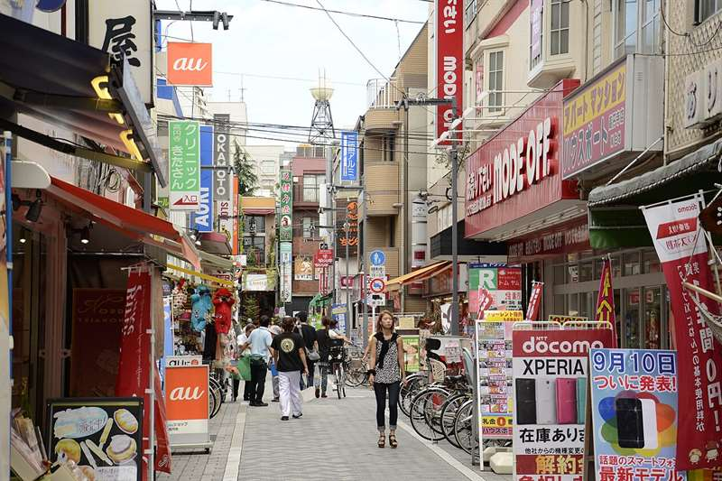
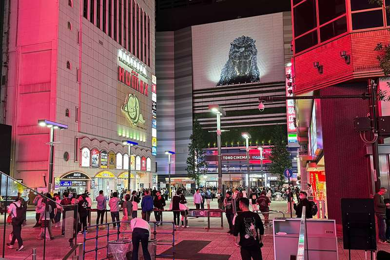
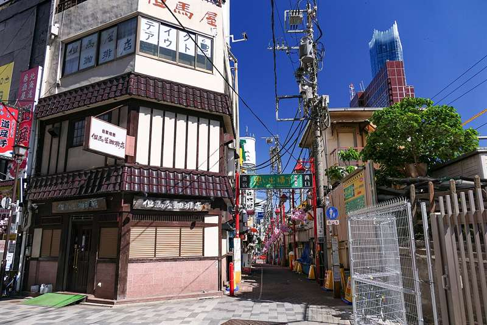
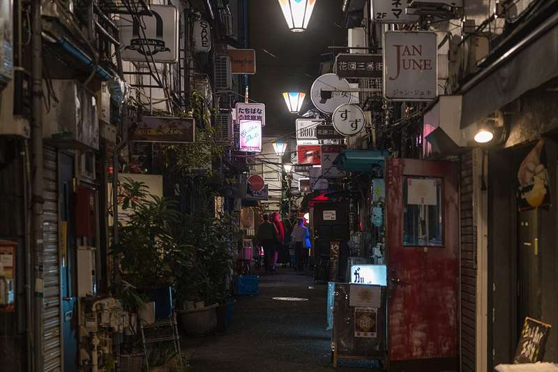
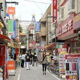
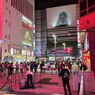
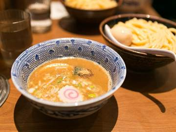
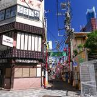
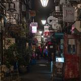
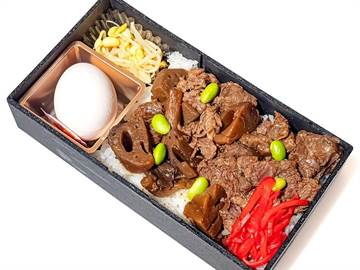

Giorno 8 di 15 · Giovedì 10 dicembre · Kyoto → Tokyo
Shinkansen, Shimokitazawa e la notte di Shinjuku




In sintesi
- 09:30 Shinkansen Nozomi, posto E per il Monte Fuji.
- Pomeriggio Shimokitazawa, vintage e caffè.
- Sera Godzilla, la tsukemen di Fuunji e Golden Gai.
Itinerario
- 08:20Check-out e trasferimento in stazione — da Shijo-Omiya sono venti minuti abbondanti con le valigie. Con due bagagli grossi il taxi (~1.300 yen) vi toglie il pensiero: oggi il treno non si perde.
- 08:45Kyoto Station — comprate un ekiben (bento da treno) prima di salire: fa parte dell'esperienza e sul Nozomi non c'è più il carrello.
- 09:30Shinkansen Nozomi per Tokyo — 2h15 per 513 km, cioè quasi 230 km/h di media porta a porta. Chiedete i posti D/E, che verso Tokyo sono il lato sinistro nel senso di marcia.
- 11:00Monte Fuji — circa un'ora e mezza dopo la partenza (passata Shizuoka, poco prima di Shin-Fuji), il Fuji appare sulla sinistra per un paio di minuti. A dicembre, con l'aria tersa e la neve in cima, è la finestra migliore dell'anno.
- 11:45Tokyo Station → l'hotel — con le valigie la via meno faticosa è la metro Marunouchi, che parte da dentro Tokyo Station e arriva diretta a Shinjuku-sanchome in ~17 minuti; lì una fermata di Fukutoshin fino a Higashi-Shinjuku e siete a 350 m. In alternativa JR Chuo rapida fino a Shinjuku (14 minuti) e poi un quarto d'ora a piedi verso nord.
- 12:30Bagagli all'APA — la camera si prende solo dalle 15:00, ma la reception è aperta 24 ore e tiene le valigie in deposito: lasciatele e uscite leggeri. Il check-in vero lo farete al rientro, prima di cena.
- 13:30Pranzo leggero a Shinjuku, se l'ekiben non è bastato: intorno alla stazione ci sono catene di udon e ramen a ogni angolo. La cena di stasera è la tsukemen, quindi tenetevi leggeri.
- 14:30Shimokitazawa — 7 minuti di treno Odakyu da Shinjuku. Quartiere di viuzze senza auto, il centro del vintage di Tokyo: decine di negozi di seconda mano, dischi, caffè indipendenti, piccoli teatri. È il posto più rilassato della città ed è il modo giusto di passare il primo pomeriggio a Tokyo senza spremersi.
- 16:30Rientro in hotel e check-in vero — recuperate le valigie, salite in camera, cambio di scarpe. Il tramonto a dicembre è verso le 16:30: uscite quando è già buio, che è il momento giusto per Kabukicho.
- 17:15Kabukicho e la testa di Godzilla — la testa a grandezza naturale che spunta dal tetto dell'Hotel Gracery, all'ottavo piano. Ruggisce e sputa fumo a ogni ora. Sono 300 metri dal vostro hotel: ci arrivate senza nemmeno prendere la metro.
- 18:00Cena da Fuunji — quindici minuti a piedi verso sud, oltre la stazione, sul lato di Yoyogi: la tsukemen più nota di Shinjuku (vedi sotto). Fila quasi sempre, ma gira in fretta.
- 19:15Omoide Yokocho, di passaggio — il "vicolo dei ricordi" col fumo di carbonella e le lanterne rosse l'avete già visto nel 2025, con la birra del giorno di Shinjuku. Stasera lo si attraversa tornando verso nord, senza fermarsi: cinque minuti, ed è sulla strada.
- 20:00Golden Gai — 280 micro-bar in sei viuzze, molti con quattro sgabelli in tutto. Alcuni hanno un coperto di 500-1.000 yen e alcuni non accettano stranieri: cercate quelli con il cartello "welcome" o il menu in inglese in vetrina.
Le tappe su Google Maps
- APA Hotel (casa)

Shimokitazawa
Godzilla (Hotel Gracery)
Fuunji
Omoide Yokocho
Golden Gai
Toccate una tappa e si apre in Google Maps: da lì Indicazioni vi dice treno e binario partendo da dove siete.
La mappa si carica solo se la toccate, per non consumare dati: il tracciato è a piedi; dove l'itinerario dice treno o metro, prendete quelli.
Kyoto → Tokyo in Shinkansen ↗Dove mangiare
- Sul treno

un ekiben a Kyoto Station: quello con il manzo di Omi, uno dei tre grandi wagyu giapponesi. Evitate il 551 Horai — è ottimo, ma sullo Shinkansen l'odore del maiale al vapore è una maleducazione seria. - CenaFuunji (風雲児), Yoyogi 2-chome, cinque minuti dall'uscita sud di Shinjuku — la tsukemen: noodle spessi serviti a parte, da intingere in un brodo densissimo di pollo e pesce essiccato. Si prende il tokusei, con chashu doppio e uovo marinato, sui 1.300 yen, e il formato grande non costa di più. Nella lista dei cento migliori ramen di Tabelog. Aperto tutti i giorni 11-15 e 17-21, e chiude prima se finisce il brodo: per questo si arriva alle 18. Si ordina alla macchinetta all'ingresso.
Note e dritte
La logica della giornata: mezza giornata la mangia il trasferimento, quindi il pomeriggio è volutamente leggero — Shimokitazawa non richiede biglietti, orari né energia — e la sera è tutta a piedi dall'hotel. Zero rischio di arrivare a Tokyo esausti il primo giorno.
Sul biglietto Shinkansen: prenotate su SmartEX (app in inglese, carta di credito, si scarica il QR e si passa ai tornelli senza stampare) oppure ai Midori no Madoguchi in stazione. ~13.320 yen a persona per Kyoto-Tokyo in classe ordinaria riservata. Il JR Pass a 50.000 yen non conviene per questo itinerario: fate una sola tratta lunga.
Il posto E. Nella carrozza ordinaria la fila è A-B-C corridoio D-E: A è il finestrino da un lato, E dall'altro. La cosa da sapere è che le lettere sono fissate al vagone, non al senso di marcia — sulla Tokaido i treni al capolinea non girano, invertono e basta — quindi la E sta sempre dallo stesso lato fisico, che è quello del Fuji, in tutte e due le direzioni. Andando verso Tokyo quel lato è la vostra sinistra. Diffidate della versione che gira su parecchi blog («all'andata E, al ritorno A»): è sbagliata e vi mette esattamente dalla parte opposta. In due prendete D ed E, che sono la coppia sul lato giusto. Se prenotate online li scegliete dalla mappa.
Da qui in poi Shinjuku è la vostra base per sette notti — ma attenzione a cosa vuol dire: l'APA sta sul bordo nord di Kabukicho, non attaccato alla stazione di Shinjuku, che è a 1,1 km. La vostra fermata quotidiana è Higashi-Shinjuku (350 m, linee Oedo e Fukutoshin), ed è una stazione piccola e gestibile. Alla mostruosa Shinjuku Station ci andrete solo quando serve un treno JR: in quel caso ricordate che ha oltre 200 uscite ed è la più trafficata del mondo, quindi il primo giorno segnatevi da che parte si esce per tornare verso casa.
L'onsen in terrazza. L'hotel ha un bagno termale all'ultimo piano, gratuito e con vasca all'aperto. Da stasera in poi è l'antidoto standard alle giornate da 8-9 km: si scende, ci si ammolla venti minuti e la sera dopo si riparte con le gambe nuove. Nudi e senza costume, come da regola giapponese, e i tatuaggi grossi vanno coperti.
Se oggi non gira. Già il più leggero del viaggio Questa è la giornata cuscinetto per costruzione: metà se la mangia lo Shinkansen e Shimokitazawa non ha biglietti, orari né tappe obbligate. Se arrivate a Tokyo distrutti si salta e si va dritti all'onsen in terrazza — la sera fra Fuunji e Golden Gai è a piedi da casa e regge da sola.